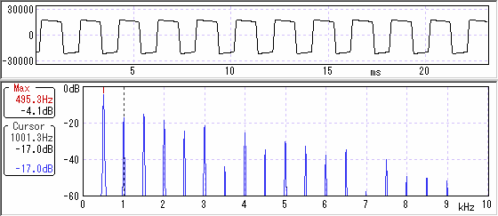
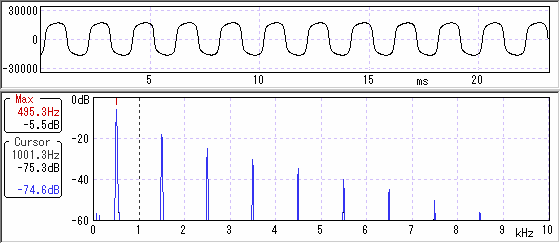
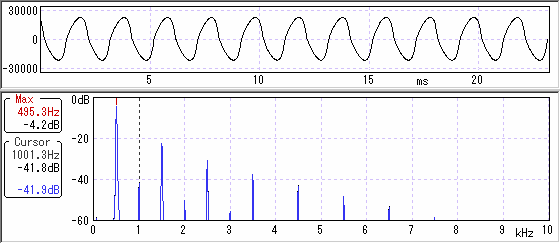
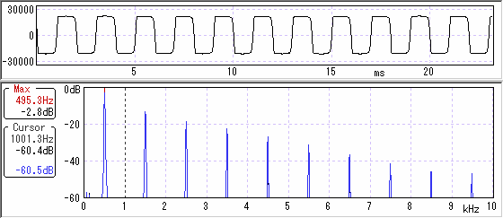
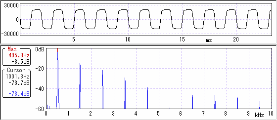
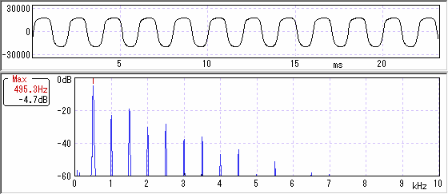
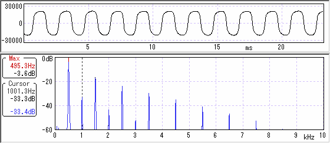

歪みと波形・倍音その1（ダイオードの種類）
2007年10月04日 カテゴリー：歪みと波形・倍音
クリッピングに使うダイオードは歪みの音色に深く関わっているとされています。私はイマイチ違いがわからないのでブレッドボードでいろいろ試してみました。
基本的なことは一庵堂にある「ダイオードクリッパー」の項を参照してください。
歪みと波形・倍音 記事一覧
とりあえずテキトーに回路を組んでみました。

これだけでもちゃんと動くみたいです。私は電気的知識に乏しいのでどこか間違ってるかもしれません。とりあえず爆発はしません（笑）。この回路でダイオードのところをいろいろ換えて倍音や波形の特性を見てみます。
・クリッピングなし（ゲイン500倍くらいで測定）

倍音が豊富です。ただ歪ませるにはかなりゲインを上げないといけないし（ノイズも増える）、サスティンもないのがナンです。
・1S2076A対称（ゲイン100倍くらいで測定）

1S2076Aは1N4148と互換（らしい）のシリコンダイオードです。波形が丸っこい感じになってます（ゲインを上げても同じような形）。奇数次倍音ばっかりです。
・1N60対称（ゲイン500倍くらいで測定）

1N60は一般的なゲルマニウムダイオードです。全然歪まないなぁと思ってたら変な波形でした。使えなさそう…
・LED（赤色3mm）対称（ゲイン500倍くらいで測定）

クリッピングなしの場合と波形が似てますが、奇数次倍音ばっかりです。
・2SK30ATM-GR対称（ゲイン100倍くらいで測定）

2SK30Aは一般的（と思う）JFETです。1S2076A対称の場合より波形が角ばってます。
・1S2076A×2と1S2076A非対称（ゲイン100倍くらいで測定）

当たり前ですが波形が非対称になりました。偶数次倍音が出てます。
・1S2076A+1N60と1S2076A非対称（ゲイン100倍くらいで測定）

偶数次倍音が若干減ったような感じです。
・総評（のようなもの）
歪みといってもいろいろな波形や倍音の出方があることがわかりました。私の耳では大して違いがわからないんですが、強いて言えばクリッピングなしが好みです。このコンテンツの意味ナシ（笑）。真空管の歪みがどんなものなのか、いつか測定してみたいものです。